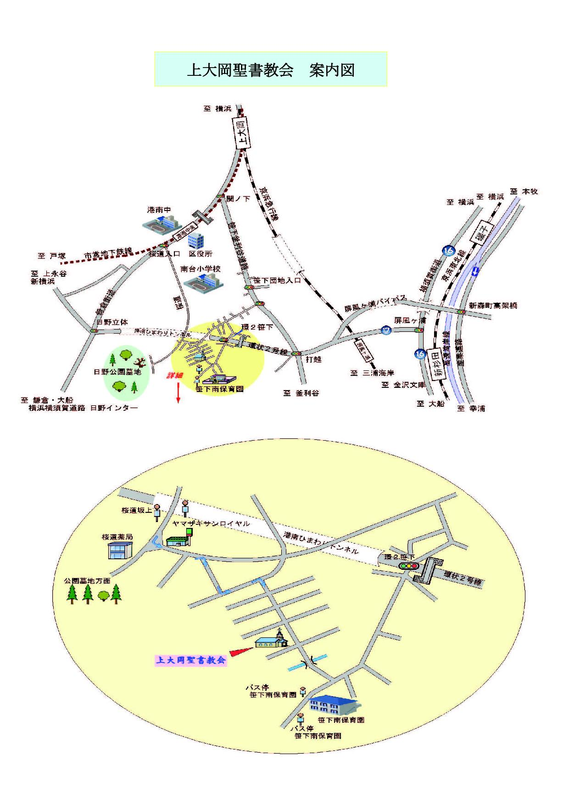

| 日本同盟基督教団 上大岡聖書教会 Kamiooka Bible Church |
|
上大岡聖書教会への行き方 （←クリックするとPDFファイルになります）  ◇バス 京急及び市営地下鉄の上大岡駅から バス５番乗り場（最近３→５番に変更になりました） 「桜道坂上経由洋光台行き」（「こまわりくん」）で約１０分 「笹下南保育園前」下車徒歩２分 土・日ダイヤ 上大岡発 ８：０５ ８：３５ ８：５５ ９：１５ ９：３５ ９：５５ １０：１５ ◇地下鉄 港南中央駅 から徒歩で 地下鉄駅 区役所側（１番出口）に出て鎌倉街道を左手に進む。 最初の信号（桜道交差点）を左折 坂を道なりに登っていき、「ヤマザキサンロイヤル」で左折 ２本目の道路を右折 突き当たりを左折 直ぐ右折 そこから教会の看板が見えます。（港南中央駅から徒歩約12分） ◇車で（駐車場は教会におたずね下さい。） 高速道路 ・湾岸線（横浜方面から） 「磯子インター」で降り、産業道路「新森町高架橋」交差点を右折 環状２号線に入り、「環２笹下」交差点を左折（インターから教会まで約2.5㎞） ・湾岸線（並木方面から） 「杉田インター」で降り、産業道路「新森町高架橋」交差点を左折 環状２号線に入り、「環２笹下」交差点を左折（インターから教会まで約4.5㎞） ・横浜横須賀道路 「日野インター」で降り、鎌倉街道を上大岡方面へ 「日野立体」交差点を右折、「環２笹下」交差点を右折 一般道路 ・鎌倉街道（21号線） 上大岡方面から 「関ノ下」交差点を左折、 「（関ノ下）交差点から教会まで約1.5㎞）（打越交差点は上大岡方面からの右折禁止です。） ・笹下釜利谷道路（22号線） 「打越」交差点を左折 環状２号線に入り 「環２笹下」交差点を左折（「打越」交差点から教会まで約1.0㎞） ・横須賀街道（16号線） 「屏風ヶ浦」交差点から環状２号線に入り「環２笹下」交差点を左折 （「屏風ヶ浦」交差点から教会まで約2.0㎞） |
| 日本同盟基督教団 上大岡聖書教会 牧師：鈴木大輝 〒234-0052 横浜市港南区笹下 7-13-2 ℡ 045-845-4536 |